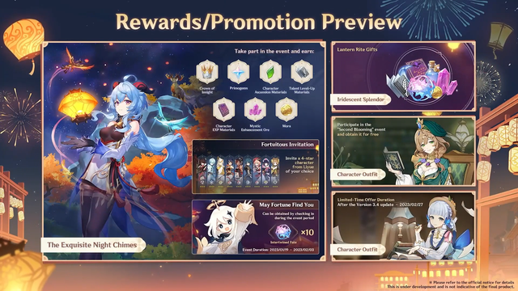
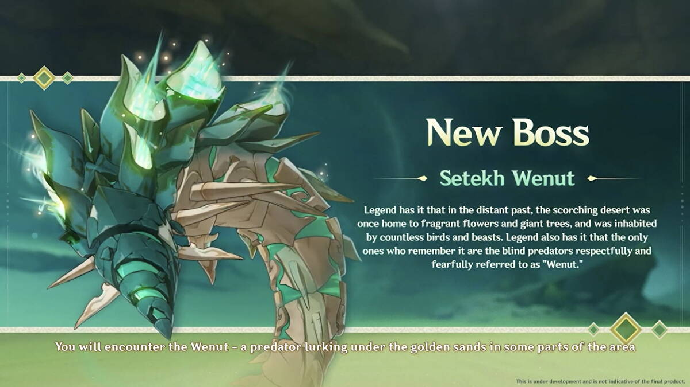

All about upcoming Lantern Rite!
The version 3.4 live stream gave us a sneak-peek at whats coming up in Lantern Rite, and it is jam-packed with things to do.
Lantern Rite is an annual event, that brings fun new mini games each year, including all of your favorite characters from across Teyvat in new story quests!
This year, the Genshin Impact Lantern Rite Festival, also known as the Exquisite Night Chimes event, runs from January 18.
First up is a racing game called Radiant Sparks, where players can join as part of the fireworks display in Liyue Harbor.
This is joined by a Paper Theater performance (and a music festival!), where Travelers must help ensure the theatre play goes smoothly.
Lastly new Waverider race game is coming, along with a combat trial pitting our teams against Hilichurls in the wilderness.

3.4. speculations regarding new materials!
Other than the character changes and event leaks, we have our new weekly boss - Wind-Bitten Sandworm who is all set to give a tough time to the players.
On latest livestream, HV shared more about upcoming area and gameplay of the new Field boss which you can check out here!
- Rewards and drops:
- Sand grease pupa
- Pseudo-Stamens
- Nagadus Emerald fragments